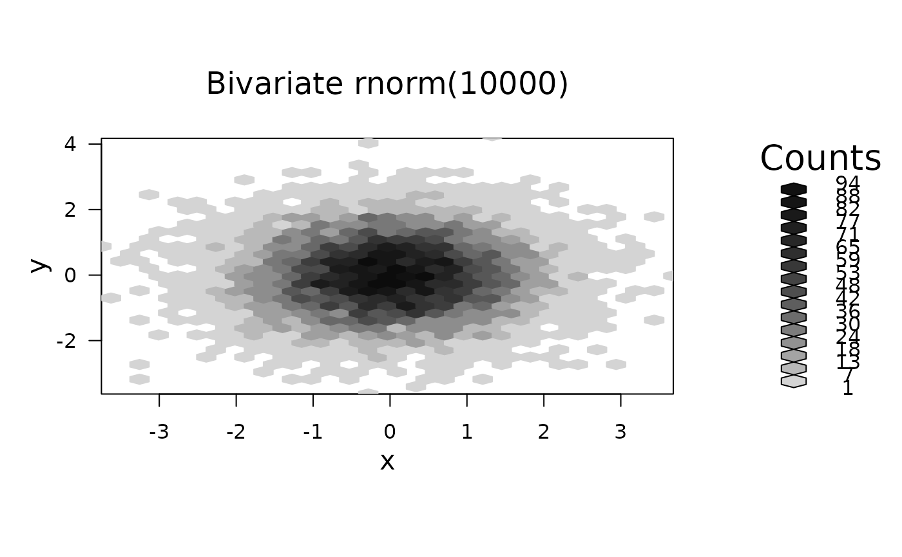
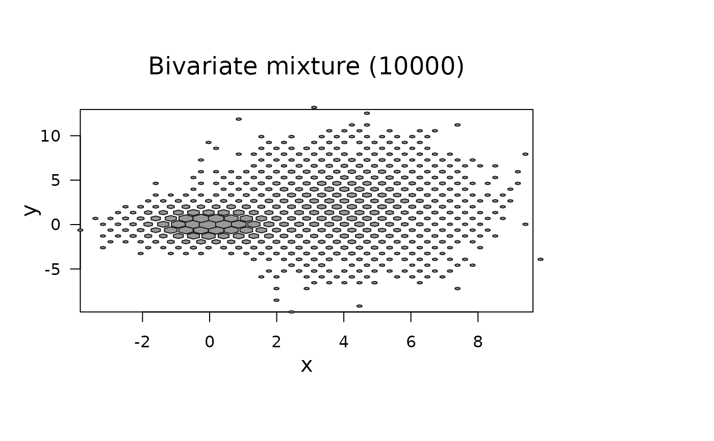
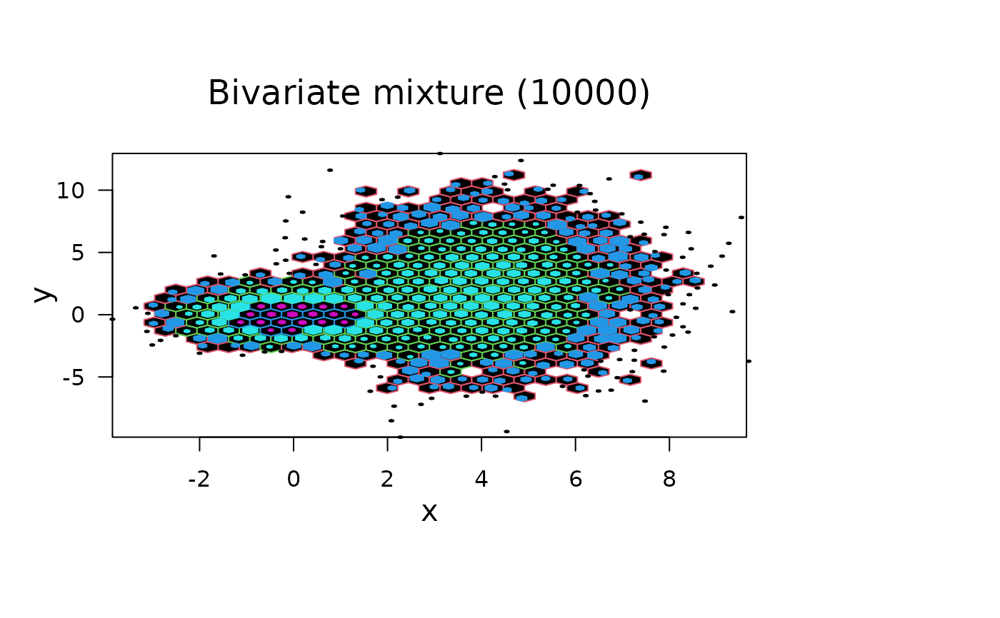

grid.hexagons.RdPlots cells in an hexbin object. The function distinquishes among
counts using 5 different styles. This function is the hexagon
plotting engine from the plot method for hexbin
objects.
grid.hexagons(dat, style = c("colorscale", "centroids", "lattice",
"nested.lattice", "nested.centroids", "constant.col"),
use.count=TRUE, cell.at=NULL,
minarea = 0.05, maxarea = 0.8, check.erosion = TRUE,
mincnt = 1, maxcnt = max(dat@count), trans = NULL,
colorcut = seq(0, 1, length = 17),
density = NULL, border = NULL, pen = NULL,
colramp = function(n){ LinGray(n,beg = 90, end = 15) },
def.unit= "native",
verbose = getOption("verbose"))an object of class hexbin, see hexbin.
character string specifying the type of plotting; must be (a unique abbrevation) of the values given in ‘Usage’ above.
logical specifying if counts should be used.
numeric vector to be plotted instead of counts, must besame length as the number of cells.
numeric, the fraction of cell area for the lowest count.
the fraction of the cell area for the largest count.
logical indicating only eroded points should be
used for "erodebin" objects; simply passed to
hcell2xy, see its documentation.
numeric; cells with counts smaller than mincnt
are not shown.
cells with counts larger than this are not shown.
a transformation function (or NULL) for the counts,
e.g., sqrt.
a vector of values covering [0, 1] which determine
hexagon color class boundaries or hexagon size boundaries -- for
style = "colorscale" only.
grid.polygon argument for shading. 0 causes
the polygon not to be filled. This is not implemented (for
grid.polygon) yet.
grid.polygon() argument. Draw the border for
each hexagon.
colors for grid.polygon(). Determines the color
with which the polygon will be filled.
function of an integer argument n returning n
colors. n is determined
default unit to be used.
logical indicating if some diagnostic output should happen.
Adds hexagons to the plot.
The six plotting styles have the following effect:
style="lattice" or "centroids":Plots the hexagons in different sizes based on counts. The
"lattice" version centers the hexagons at the cell centers
whereas "centroids" moves the hexagon centers close to the
center of mass for the cells. In all cases the hexagons will not
plot outside the cell unless maxarea > 1. Counts are rescaled
into the interval [0,1] and colorcuts determine the class
boundaries for sizes and counts. The pen argument for this style
should be a single color or a vector of colors of
length(bin@count).
style="colorscale":Counts are rescaled into the interval [0,1] and colorcuts determines
the class boundaries for the color classes. For this style, the
function passed as colramp is used to define the n colors for
the n+1 color cuts. The pen argument is ignored.
See LinGray for the default colramp and
alternative “color ramp” functions.
style="constant.col":This is an even simpler alternative to "colorscale",
using constant colors (determined pen optionally).
style="nested.lattice" and "nested.centroids":Counts are partitioned into classes by power of 10. The encoding nests hexagon size within powers of 10 color contours.
If the pen argument is used it should be a matrix of colors with 2
columns and either ceiling(log10(max(bin@count))) or
length(bin@count) rows. The default uses the R color palatte
so that pens numbers 2-11 determine colors for completely filled
cell Pen 2 is the color for 1's, Pen 3 is the color for 10's, etc.
Pens numbers 12-21 determine the color of the foreground hexagons. The
hexagon size shows the relative count for the power of 10. Different
color schemes give different effects including 3-D illusions
Hexagon size encoding minarea and maxarea
determine the area of the smallest and largest hexagons
plotted. Both are expressed fractions of the bin cell size. Typical
values might be .04 and 1. When both values are 1, all plotted
hexagons are bin cell size, if maxarea is greater than 1 than
hexagons will overlap. This is sometimes interesting with the lattice
and centroid styles.
Count scaling
relcnt <- (trans(cnt)-trans(mincnt)) / (trans(maxcnt)-trans(mincnt))
area <- minarea + relcnt*maxarea
By default the transformation trans() is the identity
function. The legend routine requires the transformation inverse
for some options.
Count windowing mincnt and maxcnt
Only routine only plots cells with cnts in [mincnts, maxcnts]
Carr, D. B. (1991) Looking at Large Data Sets Using Binned Data Plots, pp. 7--39 in Computing and Graphics in Statistics; Eds. A. Buja and P. Tukey, Springer-Verlag, New York.
set.seed(506)
x <- rnorm(10000)
y <- rnorm(10000)
# bin the points
bin <- hexbin(x,y)
# Typical approach uses plot( <hexbin> ) which controls the plot shape :
plot(bin, main = "Bivariate rnorm(10000)")

## but we can have more manual control:
# A mixture distribution
x <- c(rnorm(5000),rnorm(5000,4,1.5))
y <- c(rnorm(5000),rnorm(5000,2,3))
hb2 <- hexbin(x,y)
# Show color control and overplotting of hexagons
## 1) setup coordinate system:
P <- plot(hb2, type="n", main = "Bivariate mixture (10000)")# asp=1
## 2) add hexagons (in the proper viewport):
pushHexport(P$plot.vp)
grid.hexagons(hb2, style= "lattice", border = gray(.1), pen = gray(.6),
minarea = .1, maxarea = 1.5)
#> Warning: maxarea > 1, hexagons may overplot
library("grid")
popViewport()

## How to treat 'singletons' specially:
P <- plot(hb2, type="n", main = "Bivariate mixture (10000)")# asp=1
pushHexport(P$plot.vp)
grid.hexagons(hb2, style= "nested.centroids", mincnt = 2)# not the single ones
grid.hexagons(hb2, style= "centroids", maxcnt = 1, maxarea=0.04)# single points
popViewport()
